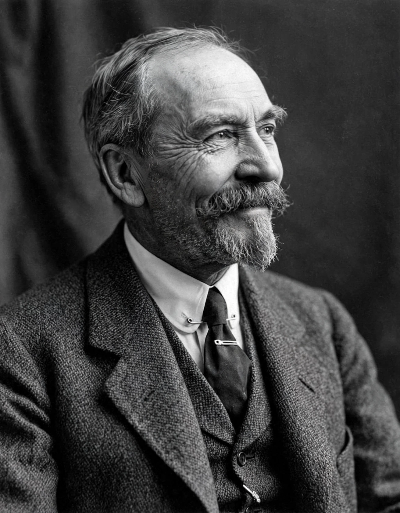

Thorstein Veblen
From Wikipedia, the free encyclopedia

Thorstein Bunde Veblen (30 July 1857 – 3 August 1929) was an American economist and sociologist, founder of institutional economics and author of The Theory of the Leisure Class (1899) — the book that gave the language 'conspicuous consumption' and 'conspicuous leisure'. His evolutionary, anthropological economics attacked the hedonistic assumptions of neoclassical theory and anatomised the predatory honour-culture of business civilisation.
Life and ideas
A Norwegian immigrant farmer's son from Wisconsin, Veblen held precarious posts (Chicago, Stanford, Missouri) amid scandal and brilliance. His scheme: institutions as settled habits of thought, evolving by selection; a dichotomy between 'industry' (workmanship, making things) and 'business' (pecuniary predation, making money) — engineers versus absentee owners — that powered The Theory of Business Enterprise (1904) and his call for a 'soviet of technicians'.
Legacy
Veblen's terms escaped economics into common speech ('Veblen goods', whose price raises demand, is the textbook afterlife), and his method — sardonic anthropology of his own society — influenced everyone from Galbraith to modern heterodox and evolutionary economics. Academia never quite housed him; posterity never quite shelved him.